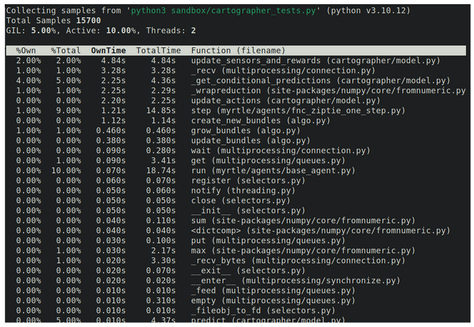

Vectorization with NumPy is an indispensable tool for working with data and algorithms, but sometimes even that isn't quite fast enough. If you have deep pockets and the patience of a saint, you can get your code running on GPUs, but for most of us, Numba is the secret to unlocking performance. Here are some tricks I've collected.
- Try for-loops first. Set aside all your hard-won intuitions about vectorization. They don't apply within a Numba function.
- Avoid using NumPy array operations or using NumPy functions. Modify one element at a time using common operators. Undo all your vectorization.
- Don't create intermediate NumPy arrays in your Numba code. Those get allocated and written, which takes extra time.
- Don't write your own matrix multiplication. (Unless it's for fun.)
- Use @njit rather than @jit. This will prevent your function from failing silently and slowing down to interpreted Python.
- Call Numba-jitted functions once before kicking off the program. This "warms them up" by forcing the compiler to compile them on the first time through.
- Pass return variables in as input arguments. That way the memory space for them is pre-allocated.
- Declare array arguments and created arrays with an explicit data type (usually numpy.float). This will prevent cryptic error messages later.
- Profile your code line by line. Only use Numba where it really makes a difference.
- Build Numba functions incrementally, testing often.
Your first Numba function
If you’re new to Numba, not to worry. It’s not nearly as intimidating as it sounds. Imagine you have two arrays and you want to add them.
import numpy as np
n = 10_000_000
a = np.random.sample(size=n)
b = np.random.sample(size=n)You can of course use NumPy’s array operations
c = a + bThis typically takes 15 ms on my box.
But if you need to go even faster you can write a function with Numba’s just-in-time compiler. First you'll need to make sure you have it. For me this happens at the command line:
python3 -m pip install numbaThen write a function that uses Numba's just-in-time compiler.
from numba import jit
@jit
def add(a, b, c):
for i in range(a.size):
c[i] = a[i] + b[i]
c = np.zeros(n)
add(a, b, c)The first time this function is called it takes a little time to compile, but after that this runs in about 12 ms for me. Faster than even NumPy.
It’s fun to compare this against base Python to see how far we’ve come.
After commenting out the @jit
line, this code takes 2300 ms to run.
Numba is almost 200 times faster.
Tip #1: Try for loops first
Young Python programmers quickly get for loops beaten out of them. When working with large arrays it is glacially slow. Instead, we are taught vectorization—to put our numbers into arrays before working with them. This allows under-the-hood optimizations of NumPy to speed things up.
When working in Numba, it's the opposite. Within a Numba function, for loops generally perform better than array operations. For instance, check out these two functions.
@njit
def add_arrays(a, b, c):
c = a + b
@njit
def add_for_loop(a, b, c):
for i in range(a.size):
c[i] = a[i] + b[i]
For 10 million element arrays, the add_arrays() function
runs in 35 milliseconds on my machine.
The add_for_loop() function runs in 12.6 milliseconds.
Numba loves for loops. Even though it operates naturally on NumPy arrays as input arguments, I've found that it runs fastest when I avoid using any array operations in the function. For-loops and base Python are your friends. The optimizations that Numpy has already performed conflict with the compile-time optimizations of Numba.
Tip #2: Avoid Numpy array operations and functions
This is almost a repeat of tip #1 about preferring for loops,
but it is so counterintuitive that it bears repeating.
Avoid doing any NumPy operations in a Numba-jitted function.
Don't create new arrays, don't broadcast existing arrays,
don't reshape() or transpose()
or concatenate().
(We'll talk about exceptions to this in later tips.)
NumPy is fast because it uses pre-compiled, optimized C code. Numba is fast because it compiles Python code in a highly-optimized way. But Numba can't change the optimized NumPy code, so it's stuck trying to shove a square peg into a round hole, and some performance is lost.
To demonstrate, here are NumPy and Numba functions that multiply three one-dimensional arrays to get a three-dimensional array, then sums it along the second dimension.
def numpy_version(a, b, c, d):
d = np.sum(
a[:, np.newaxis, np.newaxis] *
b[np.newaxis, :, np.newaxis] *
c[np.newaxis, np.newaxis, :],
axis=1
)
@njit
def numba_version(a, b, c, d):
for i in range(a.size):
for j in range(b.size):
for k in range(c.size):
d[i, k] += a[i] * b[j] * c[k]With these input arguments
a = np.random.sample(200)
b = np.random.sample(300)
c = np.random.sample(400)
d = np.zeros((200, 400))
I get 46.0 ms for the numpy_version() and 2.6 ms for
the numba_version(), a speed up of more than 17X.
That factor only grows as a, b, and c get larger.
Tip #3: Don't create intermediate arrays.
It's a fine point, but you can shave precious time off your Numba execution by not creating extra arrays. Intermediate arrays can make code more readable, but Numba takes them literally. It takes the extra time to allocate the memory for the intermediate variables.
Here's an example from physics simulations—calculating all
the pairwise distances between two groups of points. There are two
functions that are identical, except that one makes several stops
along the way to the final result. For 5000 points in each set,
the distances_intermediate() function takes 600 ms
on my machine, while distances_direct() takes 90 ms.
This is a contrived example, but it shows how those
intermediate arrays can bog you down.
@njit
def distances_intermediate(x1, y1, x2, y2, d):
dx = np.zeros((x1.size, x2.size))
for i in range(x1.size):
for j in range(x2.size):
dx[i, j] = x1[i] - x2[j]
dy = np.zeros((y1.size, y2.size))
for i in range(y1.size):
for j in range(y2.size):
dy[i, j] = y1[i] - y2[j]
dx_squared = np.zeros((x1.size, x2.size))
for i in range(x1.size):
for j in range(x2.size):
dx_squared[i, j] = dx[i, j] ** 2
dy_squared = np.zeros((y1.size, y2.size))
for i in range(y1.size):
for j in range(y2.size):
dy_squared[i, j] = dy[i, j] ** 2
d_squared = np.zeros((x1.size, x2.size))
for i in range(x1.size):
for j in range(x2.size):
d_squared[i, j] = dx_squared[i, j] + dy_squared[i, j]
for i in range(x1.size):
for j in range(x2.size):
d[i, j] = d_squared[i, j] ** .5
@njit
def distances_direct(x1, y1, x2, y2, d):
for i in range(x1.size):
for j in range(x2.size):
d[i, j] = ((x1[i] - x2[j]) ** 2 + (y1[i] - y2[j]) ** 2) ** .5
x1 = np.random.sample(n_pts)
y1 = np.random.sample(n_pts)
x2 = np.random.sample(n_pts)
y2 = np.random.sample(n_pts)
d = np.zeros((n_pts, n_pts))
distances_intermediate(x1, y1, x2, y2, d)
distances_direct(x1, y1, x2, y2, d)Tip #4: Don't write your own matrix multiplication.
The widest, best-paved road in scientific computing is matrix multiplication. NumPy's matrix multiplication has been optimized for your system in ways Numba can't match. Comparing a straightforward Numba for-loop implementation to NumPy's matmul() is sobering.
@njit
def matmul_numba(a, b, c):
n_i, n_j = a.shape
n_j, n_k = b.shape
for i in range(n_i):
for j in range(n_j):
for k in range(n_k):
c[i][k] += a[i][j] * b[j][k]
For a pair of 2000 x 2000 matrices, my system shows that
matmul_numba() takes 2800 ms, compared to
numpy.matmul()'s 125 ms–a more than 20X speedup.
You can't beat NumPy's matmul(). But don't let that stop
you from trying! One trick you can use is @njit(parallel=True)
and substituting Numba's prange() for range().
prange() is a special variant of range()
that supports parallelization. Together these instruct Numba to
parallelize the matrix operation across multiple threads, as Numpy does.
For me, this reduces Numba's run time by a factor of four to 720 ms.
It's still 5X slower than NumPy, but we've closed the gap a bit.
There are two good lessons here. The first is that there are tricks
to speed up Numba even more. The second is that Numba is not the right
tool for every job. For large, optimized calculations there may be a
better tool. numpy.matmul() is one of these.
For the curious,
here is a discussion about why NumPy's
matmul() is so damn fast.
Tip #5: Use @njit rather than @jit.
This tip is already outdated, showing how active Numba development is. In Numba version 0.58 and earlier, the default behavior of the compiler was to fall back to regular Python compilation if anything should happen to frustrate the Numba compiler. A small glitch like a data type mismatch could turn a bullet-fast Numba-jitted function into a slower-than-tar Python for loop. And the bad part is that there would be no error, no hint to the developer or user that anything was wrong, other than a mysterious performance drop.
The way to get around this was to use @jit(nopython=True)
as the decorator for Numba functions. This was so commonly used that
it got it's own nickname, @njit. Compiling with
@njit ensured that if Numba compilation failed, an error
would be thrown. It embodied the software engineering best practice
of having all failures be noisy.
It was so useful in fact that as of Numba 0.59 (released January 2024)
@jit now defaults to nopython=True.
Changing the default behavior of the decorator may be breaking change for
some code bases, but it comes at the benefit of better-engineered code.
And as a bonus, if you are using a recent version of Numba,
you can stop worrying about this entirely, and just use @jit.
Tip #6: Call Numba-jitted functions once before kicking off the program.
This avoids any awkward hiccups in the startup time. Numba functions are so fast because they are pre-compiled to machine code, but this compiling step takes a few moments to complete. The compiler is also "lazy" because it waits until the absolute last possible second. It is a "just in time" or JIT compiler. The upside of this is that it doesn't incur any latency in the program starting up and avoids unnecessary compilations. The downside is that it can make for an unexpected several second pause in the program the first time the function is called. Having that unscheduled pause can knock processes out of synchronization or can make for a bumpy user experience.
To take back control of when this occurs you can make a gratuitous first call to your Numba functions during startup, when nothing important is going on yet, and a user will be least annoyed by it. For example, when I’m timing a Numba-jitted function, including the first call in the timing estimate would grossly overestimate the average execution time, so I make sure to call it first outside the loop. This "warms up" the functions, so that they are already compiled by the time they are encountered in the natural flow of the program.
It’s a small thing, but small things add up.
Tip #7: Pass return variables in as input arguments.
This avoids allocating the memory and initializing a fresh array each time, shaving off precious microseconds. It's natural to write a function like this
@njit
def add(a, b):
c = np.zeros(a.size)
for i in range(a.size):
c[i] = a[i] + b[i]
return c
where the result array c is created and initialized
before it is populated.
Often, functions are called repeatedly with arguments of the same shape.
(The fact that they are called so often is what makes them appealing
targets for speeding up with Numba.) When that is the case,
it's possible to use a shortcut.
@njit
def add(a, b, c):
for i in range(a.size):
c[i] = a[i] + b[i]
where the result array c is created just once, outside
the function, and re-used. This way the memory space is pre-allocated
and the function can get right to the business at hand.
This is such a useful trick that NumPy uses it too. Most NumPy functions
have an optional out parameter that you can use to pass
a pre-allocated results array.
The difference is typically just a small fraction of the total compute time, but it's a freebie–an optimization that comes with simpler code and logic. There's no downside. That's a rare thing. Letting it go unclaimed is like leaving the last bite of cheesecake just sitting on the table.
Tip #8: Explicitly declare the type of all the arrays going into your function, and all of the arrays it creates internally.
When Numba compiles your function to machine code it has to be precise about the type of the arrays it accepts and operates on. Python doesn’t provide this by default. Numba has to make some guesses about this at compile time, and it’s easy to make mistakes.
(This is less of a problem than it used to be. Numba has gotten more clever at type inference and more informative in its error messages over the years. I lost a lot of sleep over type errors in Numba functions in the past, but those same errors would be much much easier to diagnose now.)
One of the things that makes Python so convenient is that it lets you be sloppy with your variable types. You can create a variable and set it equal to one, and depending on how it gets used later in the program, Python will figure out whether you meant it to be an integer or a float or even a boolean. All this flexibility is referred to as duck typing, as in, “if it walks like a duck and talks like a duck then treat it like a duck.”
To make your life even easier, Python can interpret the same variable different ways at different points in the program, depending on how you use it. This additional flexibility is called dynamic typing. It lets you play fast and loose with your variables and lean on Python to take care of a lot of details.
Dynamic typing comes at a cost though. The Python interpreter has to go through extra steps during execution to figure out what type each variable should be, and convert them if necessary. When our goal is to make code as fast as possible, this is overhead, a good place to trim. After a Numba-jitted function is compiled, it no longer does dynamic typing. This makes for snappier code, but it also means that you have to get the type right and keep it consistent.
Numba does what it can to help. It performs its own type inference
the first time you call a jitted function, based on the arguments that you
send it and how they get used. But this is hard to get right every time.
If you help Numba out and get explicit with your types
(say, with NumPy functions’ dtype argument),
you will probably be happy you did.
Tip #9: Profile your code. Only use Numba where it really makes a difference.
The first time you use Numba to pre-compile a function and get a 20X speedup is intoxicating. Code that used to plod along now flies by faster than you can blink. It's probably how Peter Parker felt after he got bitten by that spider.
It will be tempting to Numba-fy everything. And honestly I won't try to talk you out of it. When you do, you'll discover that using Numba doesn't come for free. It takes some extra work to put everything in a Numba-friendly format. The compilation time on the first run through can be a little annoying. Numba covers most of Python, but not all of it, so you may have to rewrite parts of your code to stay Numba compliant. Debugging Numba code can be more difficult than vanilla Python. And most critically, there is a lot of code that Numba just doesn't speed up.
Through trial and painful error, I've found that using as little Numba as possible gives the best trade-off between performance and effort. This requires finding the hottest of hot spots in my code–the lines where it spends more than 80% of its time. A Python profiler is invaluable here. cProfile is a classic and you can't go wrong with it, but my personal favorite right now is py-spy. It doesn't require you to modify your code at all and doesn't slow it down.
A cautionary note: You may think you know where your code is spending most of its time, but you are probably wrong. Mentally profiling code is hard, even for people who have been at it for a long time. Profilers are your friends.
A call to py-spy from the command line looks like this
py-spy top --pid 12345where 12345 is the process id I want to inspect. The screenshot below shows some sample output. The third column, OwnTime, shows how much total time the program has spent on a particular function call. If this program had a slow spot in need of optimization, the OwnTime for the top item would be much greater than for all the lines below it.
Once you find that narrow bottleneck in your code you can direct all your optimization powers at it and have confidence that you are focusing your attention on the right problem.

Tip #10: Build Numba functions incrementally, testing often.
I’ve had the best luck easing into Numba functions. First I write the Python/NumPy version, then I gradually start substituting the slowest lines with Numba.
This helps a lot with debugging. A large Numba function can hide some inscrutable errors. (Although its error messages continue to get more specific and informative with newer versions.) If I try to skip ahead and write a big Numba function all at once, I almost always end up going back and re-starting from a minimal example.
Writing it in Python first has the extra advantage of letting you compare outputs and test whether the Numba function is doing what it was intended to do. A Python reference implementation can save a great deal of flail debugging.
Another advantage of writing Numba alongside base Python is that you can time both of them and see whether the Numba version is indeed faster. Disappointingly, sometimes it’s not. When that happens, you can save yourself the extra code complexity. But when it does come in faster, it’s gratifying to know just how fast.
Finally, building your Numba function piece at a time lets you test different variations. All of the performance tips in this list are the result of me fiddling around with Numba functions, making changes, and timing them. Trial and error function timing is a fantastically useful tool with Numba. Because compiler optimizations are so down in the weeds, Numba will give different results on different machines and with different versions of software. Testing it on your own code and your own hardware is the only way to really know the best way to approach your project.
Putting it all together, during development my Numba code layout typically looks like this
# Warm up the function. Force the JIT compiler to do its thing.
numba_version(args)
n_iter = 100
total = 0.0
for _ in range(n_iter):
start = time.time()
numba_version(args)
total += time.time() - start
print(f"Numba version: {total / n_iter * 1000} ms")
total = 0.0
for _ in range(n_iter):
start = time.time()
numpy_version(args)
total += time.time() - start
print(f"Numpy version: {total / n_iter * 1000} ms")Optimization is a vast topic and Numba is just one tool in the toolbox. It probably won’t be your first line of defense for speeding up your code, but after you’ve tried all the basic approaches, it’s a nice big hammer to have at hand.